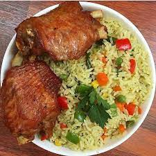

Nigerian Fried Rice Recipe

Description: Prepare Nigerian fried Rice
This recipe can be made with either fresh or frozen vegetables. Add fresh prawns, shrimps or seafood stick. Add cooked cubed chicken
breast or thighs. If you want, you can go all out and everything including fried liver to make it special Nigerian fried rice.
No matter how you decide to make it, don’t forget to pair it with some chicken. Yum yum!
Ingredients
- Raw rice: long grain or golden Sella basmati rice would work for this recipe
- Curry powder
- Dried thyme
- Salt
- Chicken bouillon powder or stock cubes
- Chicken stock/broth
- Carrots
- Sweet corn
- Spring onions also called green onions
- Onion
- fresh Prawn
- Liver(Use cow or goat liver)
- Vegetable oil
- Butter
- Frozen peas substitute with canned green peas
- Green bell pepper
- Ground ginger powder (optional)
- Ground garlic powder (optional)
Steps:
- Place a pan big enough to cook rice on medium heat, add oil, heat until hot, add chopped onions, curry powder, thyme and powder and
fry for about one minute to release the fragrance then add washed rice and stir continuously for about 2-3 minutes.
(Don’t let the rice stick to the bottom of the pot)
- Add chicken stock (if the stock is not enough to cover the rice, add water to it) ginger, garlic and seasoning. Reduce heat and
simmer until tender.
- Check-in between cooking time, add water to the rice if needed and don’t forget to check for salt and seasoning and
adjust to suit your taste. Whilst you are waiting on your rice to cook, you can stir fry the vegetables or just wait
till rice is cooked
- Place a wok or skillet on medium heat, add oil and butter and heat until hot. Add the vegetables, prawns, salt and stir fry for
another 3 minutes, add a pinch of curry and thyme and stir continuously for another 3 minutes or until veggies are tender but not
overcooked. If you are using processed green peas, don’t add to your stir fry as it would go mushy. Add it 2 minutes to the end of
the cooking time.
- If you used a large skillet to stir fry the veggies, add the cooked rice to it, mix until fully combined. Check for salt and
seasoning and adjust to suit. Alternatively, add the stir-fried veggies into the rice. Mix to combine and continue to cook for
another 2 minutes.
- Take it off the heat and serve.